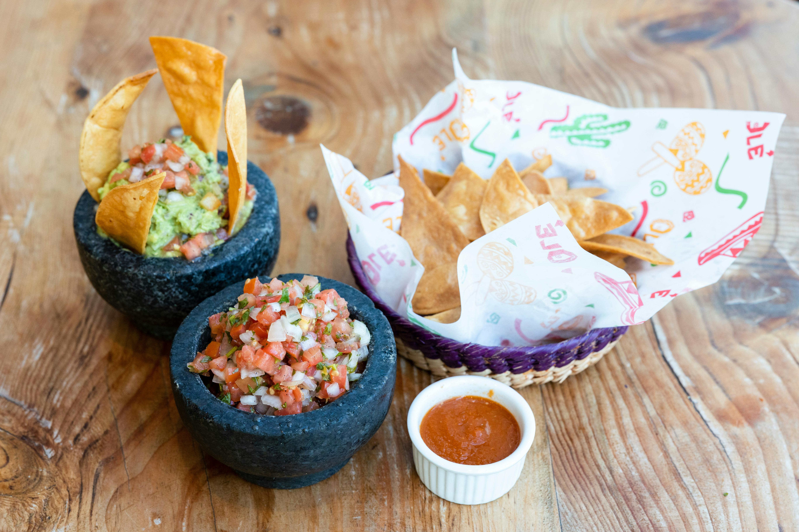
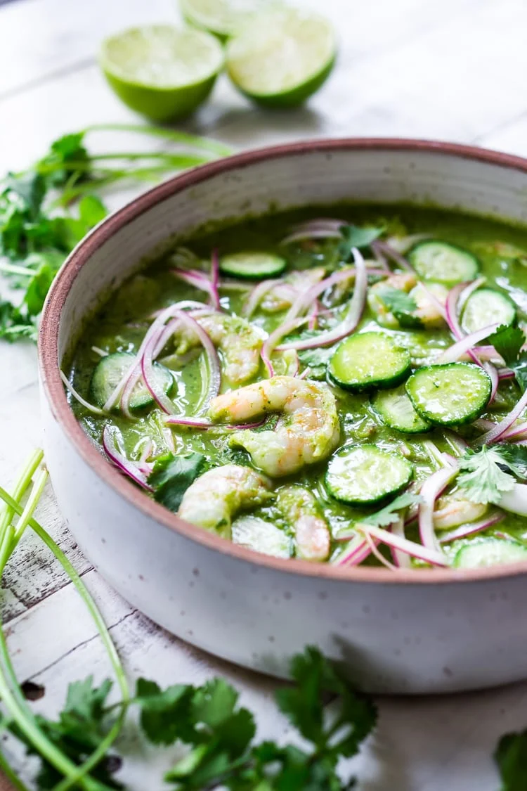
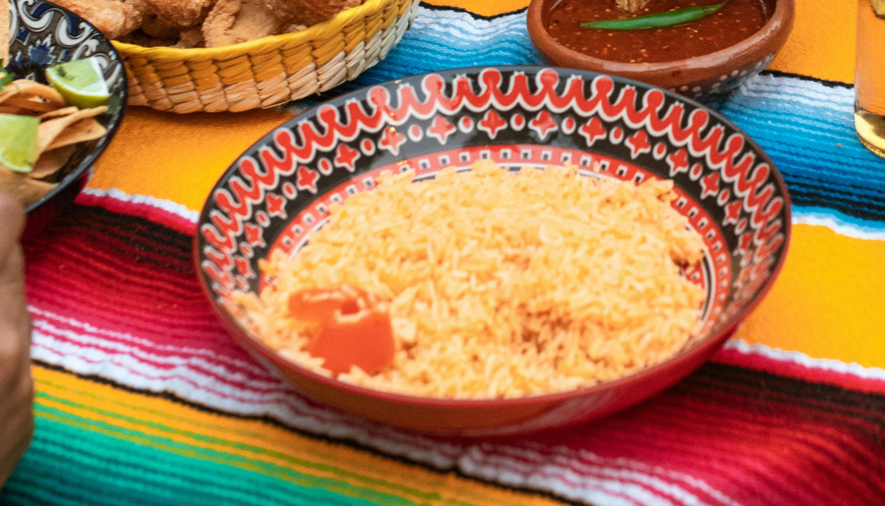

Try my Favorite Family's Mexican Recipes
Click here to return to Home page
Andrea's Spicy Pico de Gallo

Total Time:
30 Minutes
Feeds:
15 People
Ingredients
- 5 Tomatoes
- 8 Jalapeños
- 1 Bushel of Cilantro
- 2 White onions
- 8 Limes
- Salt
- Pepper
Instructions
- Dice tomatoes into small pieces.
- Dice Jalapeños into small pieces.
De-seeding is optional based on your preference of heat.
- Finely chop cilantro.
- Dice Onions into small pieces.
- Cut limes into halves, squeeze juice into big bowl.
- Add all chopped ingredients into bowl with lime juicce
- Add 1 1/2 table spoon of salt.
- Add 1 table spoon of pepper.
-
Stir all ingredients until thoroughly mixed. Add additional
salt or pepper if needed.
- Serve alongside preferred chips and enjoy!
Andrea's Aguachiles

Total Time:
1 Day (1 hour prep time and 23hrs in Fridge)
Feeds:
5-8 People
Ingredients
- 20 decent sized limes
- 1 bushel of Cilantro
- 2 Purple Onions
- 2 Cucumbers
- salt
- pepper
- Onion powder
- Minced Garlic
- 4 Serrano Peppers
- 6 Jalapeños
- 4 Tomatillos
- 1lb of raw de-veined shrimp
Instructions
- Cut limes in halves and squeeze juice in large bowl.
- Finely chop cilantro.
- Slice onions into thin wedge pieces.
- Peel cucumbers and cut into half-circles.
-
Roast serrano and jalapeño peppers and tomatillos until skin
blisters. Should be about 5 minutes each side.
-
Peel skin off all peppers and tomatillos and liquify into
blender.
-
Add contents from blender into bowl with lime juice and add
2 table spoons of Salt and Pepper with 1 table spoon of Onion
powder.
-
Add the rest of the diced ingredients into the bowl with the
raw shrimp and stir thoroughly.
- Place plastic wrap to seal the bowl.
-
Let rest in fridge overnight so lime and salt can cure the
shrimp.
-
Once dish has finished resting in fridge, pare dish with
tostadas and enjoy!
Andrea's Mexican Rice

Cook Time:
40 Minutes
Feeds:
5-7 People
Ingredients
- Jasmine Rice
- 1/2 of a White Onion
- 1 Roma Tomatoe
- 1/3 of a bushel of Cilantro
- 2 ribs of celery
- 3 cloves of garlic
- 1 1/2 cans of tomato sauce
- Salt
- Knorrs Caldo de Tomate con Sabor de Pollo Seasoning
- Canola Oil
- 1 1/2 cup of water
Instructions
- Dice tomato, onion, and celery.
- Finely chop cilantro.
- Mince cloves of garlic.
-
Turn burner to a low to medium heat setting, generously drizzle
canola oil in a sauce pan.
- Once the oil is warmed, pour 1 1/2 cups of rice
-
Check/stir periodically until rice turns golden brown. Also,
add in garlic, tomato, celery,cilantro, and onion to sauté.
-
Once rice is golden brown and vegetables have turned
translucent, pour in 1 1/2 can of tomatoe sauce and water
-
Add in generous table spoon of Knorrs tomato buoillon and salt.
-
Mix ingredients and bump heat setting up to a strong and steady
medium flame, closing suace pan with lid.
-
Routinely check on rice slightly lifting lid. Once water
starts evaporating but rice is not full softened, you may add
1/3 cup of water to pan as needed.
-
Once rice is fully softened and has fluffed up, turn off burner
and remove pan from heat.
-
Let rice rest for a few minutes by lifting lid to saucepan and
allowing steam to settle slowly, then enjoy!